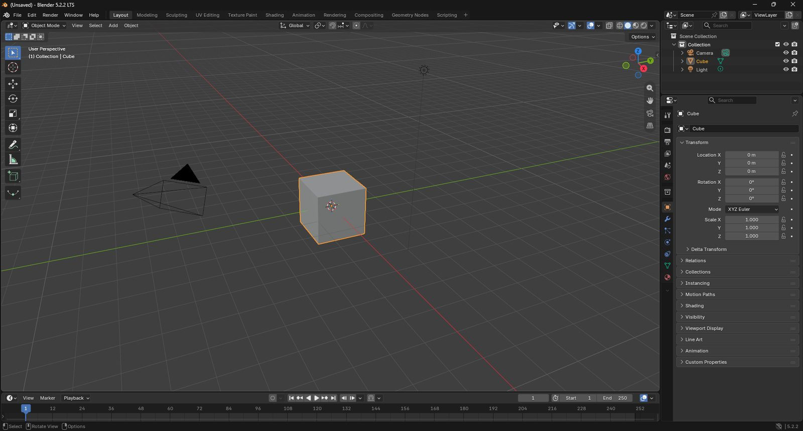

Teaching children about the importance of a healthy diet is essential for their future.
This serious game for elementary school students aims to do this through gamification—not
only within the game itself, but also through collectible figures that parents can 3D print
and use as action figures or fridge magnets.
This is my most recent project, and it is still a very early work in progress. The game is being developed in Unity and is a way for me to further improve my skills in game development, design and most importantly
a way for me to learn about 3D modeling and animation with Blender. At the moment, I'm working on a first prototype of the game, which will subsequently be tested with educators to ensure it meets all
educational requirements and is fitting to play for children still in elementary school.